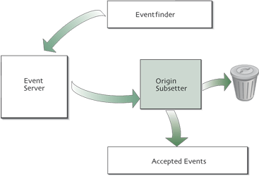
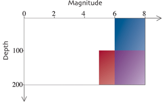

Event arm's structure

The event arm is simpler than the network arm because it works on a single type of item, not three. Its subsetter is one that checks on the qualities of earthquakes.
Simple event arm
<?xml version="1.0"?> <sod> <eventArm> <fdsnEvent> <originTimeRange> <startTime> <year>2003</year> <month>1</month> <day>1</day> </startTime> <endTime> <year>2003</year> <month>1</month> <day>10</day> </endTime> </originTimeRange> <magnitudeRange> <min>5</min> </magnitudeRange> </fdsnEvent> <printlineEventProcess/> </eventArm> </sod>
This recipe contains a simple event arm. It gets all of the earthquakes from the WHDF
catalog for 10 days in January of 2003 from IRIS's FDSN event web service. The <fdsnEvent>
used to specify a server here is much more complex than the <fdsnStation> used
to specify the server to the networkArm. This is because you often need a much more
fine-grained query to the event server than to the network server. It's best to describe
your desired data precisely in the fdsnEvent tag, and therefore
in the query to the server. In
all of the arms of SOD, throwing away data you don't want as early as possible saves time.
Recipe structure
In addition to the restrictions of XML, the order and content of elements in a recipe are further restricted to a subset SOD understands. When SOD reads a recipe, it checks that its structure is "valid". If a recipe doesn't conform, you'll get an error message about an "invalid" recipe. The ingredient listing is the definitive source for information about the structure of a recipe, but there are a few general rules about recipe structure that will make comprehending them easier.
General recipe layout
<?xml version="1.0"?> <sod> <eventArm/> <networkArm/> <waveformArm/> </sod>
SOD always has sod as its root element. Each of the arms are
children of this root element. The eventArm always goes first, then
the networkArm, and then the waveformArm. If a recipe has
a waveformArm, it must contain both an eventArm and a
networkArm. If there isn't a waveformArm, a recipe can
have just an eventArm, a networkArm,
or both.
Arm layout
The arms apply their elements in the order in which they appear.
For the eventArm, the fdsnEvent element
comes first because
the first action is to get data. As you'll see in the next tutorial,
some subsetting can be done in the waveformArm before talking to the server,
therefore the server element comes after some subsetting elements.
The steps in the arms are broken up based on the amount of information known at each step.
As the arm progresses, the information cumulatively builds to the final item in the arm.
The networkArm progresses from having only information about a network at the
networkSubsetter, adds
stations at stationSubsetter, and adds channels
at the channelSubsetter.
Therefore, you can embed
a network subsetter in a channel subsetter since a channel knows its network. In general, it's
best to put as much restrictive subsetting as possible early in an arm. This
allows SOD to retrieve only things that match earlier subsetters. If you
restrict the network to II in a channel subsetter like
here
,
SOD retrieves all of the channels from the
fdsnStation and checks if they are from network II. If you restrict the
network to II in a networkSubsetter like
here
, SOD retrieves only network II channels.
These recipes retrieve identical sets of channels, but have a
factor of 100 difference in the amount of work SOD
does in the network arm.
Boolean logic

There are some cases where the more advanced event server query can't precisely specify the data you want. This is when the true power of SOD's subsetters come into play. They can be combined through the ANDs and ORs of boolean logic to make a much more precise description of data than any of them could alone.
<originOR>
<originAND>
<magnitudeRange>
<min>5</min>
</magnitudeRange>
<originDepthRange>
<unit>KILOMETER</unit>
<min>100</min>
<max>200</max>
</originDepthRange>
</originAND>
<magnitudeRange>
<min>6</min>
</magnitudeRange>
</originOR>
These origin subsetters combine to accept earthquakes that fall under any of the colored areas
of the graph above.
The <originAND> subsetter passes an earthquake if all subsetters inside
pass for that earthquake. The <originOR> tag passes if any of the subsetters
inside pass. This originAND passes an earthquake with a magnitude of 5.1 and a depth of
at least 100 kilometers. The originAND is inside an originOR with a
magnitudeRange that requires magnitude 6 or above.
This means any earthquake
that matches the originAND or the magnitudeRange passes. All of the
subsetters in SOD support combination with ANDs and ORs.
To see how the boolean subsetters work, you can run this recipe.
Create a directory
booleanLogic, cd into it, and on Unix run
sod -f <path to your sod directory>/recipes/tutorial/booleanPrinterEvent.xml
or on Windows run
sod.bat -f <path to your sod directory>\recipes\tutorial\booleanPrinterEvent.xml
The recipe has two printline event processors in it. One is immediately after the fdsnEvent
and one is immediately after the originOR. All of the events retrieved by the server
are printed out with "From server:" before their description. Events that then pass the boolean
subsetter are printed with a "Passed boolean subsetter" before them.
More boolean logic
The boolean logic in SOD doesn't map directly to the way we speak. If read aloud, this example says "I want networks II and IU." Instead, this is interpreted as "I want networks with code II and code IU," which is impossible.
Instead, you should use constructions like the above, which says, "I want networks with code II or code IU."
 Next: Waveform Tutorial
Next: Waveform Tutorial Contact Us
Contact Us